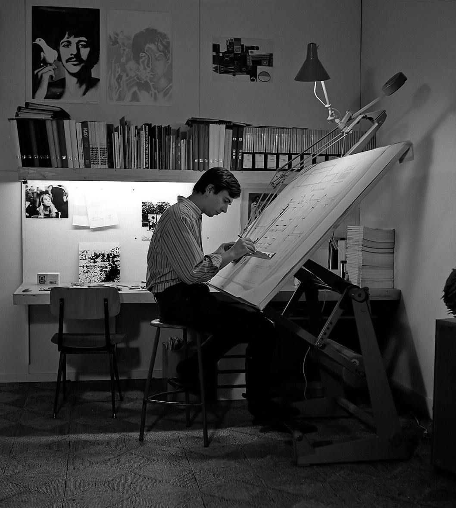

Jan van der Weerd (1943-2024) - architect
Home
Oevre
Contact
Introductie
Intro tekst.

Jan van der Weerd tijdens zijn studie bouwkunde, ca. 1970
Jan van der Weerd en Herman Haan (Atelier Aa) werkend aan Sterrenburg 3 (Dordrecht), ca. 1974